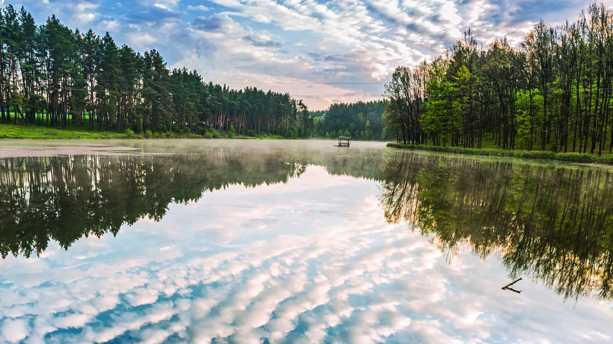
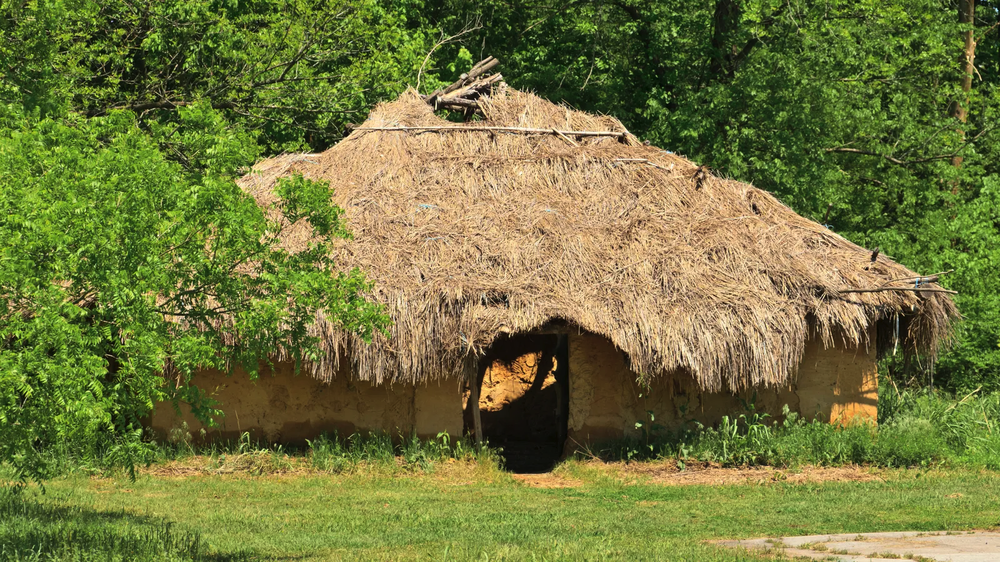
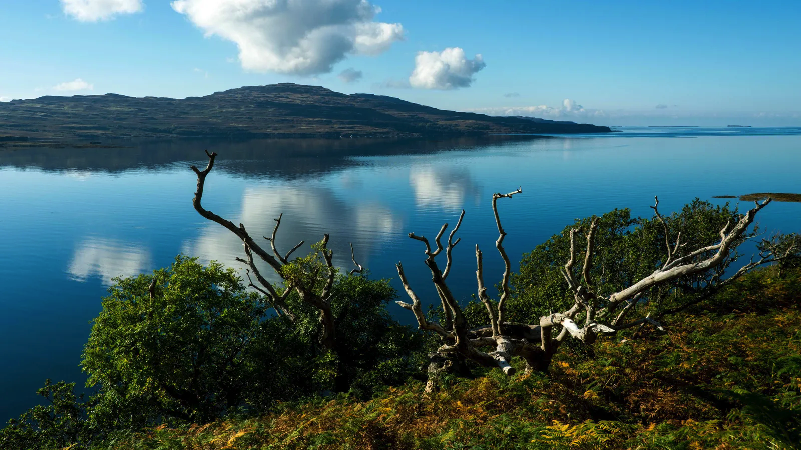

More Stories
-
 Discovery
DiscoveryThe fungi that 'eats' plastic
A chance encounter with a mushroom inspired Giuliana Furci to become a champion of these organisms that can feed, heal and even tackle climate change.
Read More -

Discovery
Eastern Europe's lost civilisation
Excavated megasites in Moldova, Romania and Ukraine reveal ancient cities shaped by advanced construction techniques and large populations.
Read More -
Discovery
The odd bird given funeral rites
They're working to protect the Southern ground hornbill, and the bird's cultural significance, for future generations.
Read More -

Discovery
The rich civilisation America looted
A treasure lost to time: Looters destroyed America's largest collection of Native American relics. Now, many have been reunited in a new museum exhibit.
Read More -
Discovery
A mysterious 'portal' to the Universe
In recent years, the internet has been alight with speculation that a chart-like carving in Anuradhapura is a stargate: an ancient gateway through which humans can enter the Universe.
Read More -

Discovery
Why this Scottish isle is in big demand
Unadorned, unkempt and unloved, Ulva is the Scottish island no one wanted to live on. But now an era-defining community buy-out is behind its welcome resurrection.
Read More